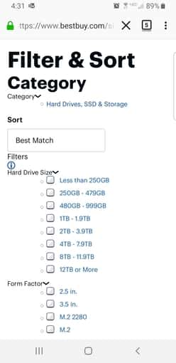
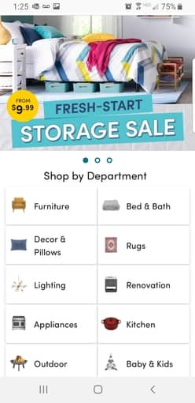

Hick's Law
Best Buy
www.bestbuy.com This site has a simple interface that allows the user to quickly expand or limit the items available for display.
White Space / Clean Design
Wayfair, LLC.
www.wayfair.com Clean, well organized layout with plenty of space between the selections for clarity.
Visual Hierarchy
Power Financial Corp
www.wealthsimple.comUsers immedietly know where to navigate as the simplistic site and colors draw focus and attention.